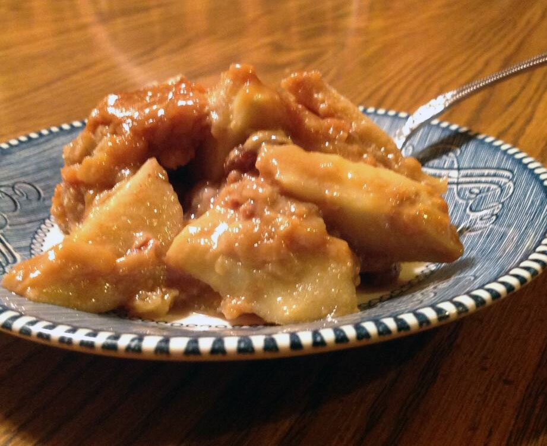

Rana's Apple Pie

The purest and most intensely flavored apple pie recipe.
The interesting thing about this recipe is the way the caramel
sauce is poured over the apples and the lattice crust.
A traditional apple pie some of the apple
juices will caramelize as it bakes and bubble out of the pie
and bake into and onto the flaky crust
Ingredients
- 6 tablespoons unsalted butter
- ½ cup brown sugar
- ½ cup white sugar
- ¼ teaspoon cinnamon
- ¼ cup water
- 5 apples - peeled, cored and sliced
- 1 pastry for double-crust pie
- 1 pinch of salt
Steps
- Preheat oven to 425 degrees F (220 degrees C).
- Combine butter, white sugar, brown sugar, water, cinnamon, and salt in a saucepan over medium heat.
- Bring to a boil, remove from heat and set aside.
- Roll out half the pastry to fit a 9-inch pie plate.
- Place bottom crust in pie plate; pour in apple slices.
- Roll out top crust into a 10-inch circle.
- Cut into 8 (1-inch) wide strips with a sharp paring knife or pastry wheel.
- Weave the pastry strips, one at a time, into a lattice pattern.
- Fold the ends of the lattice strips under the edge of the bottom crust and crimp to seal.
Back to recipes list